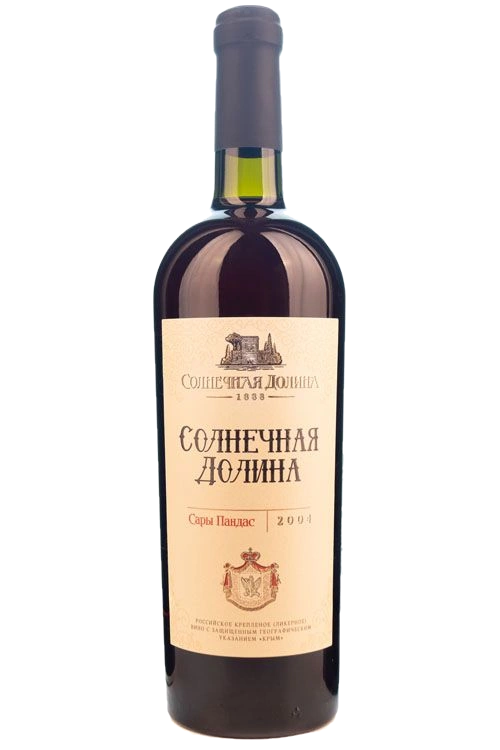

Винная карта дома · 83 карточки · 10+ автохтонов, четверо — на полке
Четыре мира —один терруар
Судак, урочище Архадерессе. Всё, что дом разливает сегодня, и всё, что хранит с 1990 года.


Глава I · 9 позиций
Меганом
Терруар мыса: бастардо магарачский и кефесия с лоз в тридцать пять лет — и четыре брюта из того же ветра.
- Сорта ядра
- бастардо магарачский · кефесия · кокур белый · шардоне
- Спирт
- 11–13% об.
- Сахар
- до 3 г/дм³ тихие · до 6 г/дм³ брют
- Выдержка
- баррик кавказского дуба (Reserve) · французского дуба (Select)
- Подача
- 7–16 °С
Игристые выдержанные · брют · 4
- Меганом КювеШардоне 100%11-13% об.до 6 г/дм³
- Меганом Blanc de BlancsКокур белый, Шардоне, Рислинг, Ркацители, Алиготе11-13% об.до 6 г/дм³
- Меганом КокурКокур белый11-13% об.до 6 г/дм³
- Меганом РозеШардоне, Пино нуар11-13% об.до 6 г/дм³
Сухие · 2
- Меганом белоеАлиготе, Ркацители, Кокур, Гарс Левелю, Фурминт13% об.4 г/дм³
- Меганом красноеБастардо магарачский, Кефесия13% об.до 3 г/дм³
Выдержанные сухие · 2
- Меганом ReserveБастардо магарачский, Кефесия13% об.4 г/дм³
- Меганом SelectБастардо магарачский, Кефесия13% об.—
Сувенирный формат · 1
Войти в мир →
Глава II · 7 позиций
Токлук
Урочище на сланцах, где, по словам виноделов дома, впервые сошлись монтепульчано и саперави.
- Сорта
- пти вердо · марселан · кариньян · монтепульчано · саперави · кефесия · верментино · шардоне · совиньон белый
- Спирт
- 13–14% об.
- Сахар
- на карточках линейки не указан
- Выдержка
- «Токлук Резерв» — выдержанное сухое
- Подача
- 12–18 °С
- Токлук РезервПти Вердо, Марселан, Кариньян13% об.—
- Токлук БелоеСовиньон белый, Верментино, Шардоне13% об.—
- Токлук ВерментиноВерментино, Шардоне13% об.—
- Токлук Мерло Пти Вердо ШиразМерло, Шираз (Сира), Пти Вердо13,5% об.—
- Токлук МонтепульчаноМонтепульчано, Саперави13% об.—
- Токлук Саперави КефесияСаперави, Кефесия13% об.—
- Токлук Каберне ФранКаберне Фран, Каберне Совиньон, Мерло14% об.—
Глава III · 25 позиций
Тихие вина дома
Кокур с лоз старше тридцати пяти лет — и сорта, за которые здесь взялись одними из первых в России.
- Сорта
- кокур 100% · совиньон зелёный · мускаты · сары и кок пандас · кариньян · марселан · пти вердо
- Спирт
- 11–13,5% об.
- Сахар
- 3–4 г/дм³ сухие · 30 г/дм³ полусладкие
- Выдержка
- Reserve: кариньян, марселан, пти вердо
- Подача
- 10–16 °С
Сортовые сухие · Солнечная Долина · 14
- Кокур Солнечной ДолиныКокур 100 %13% об.4 г/дм³
- МускатМускат белый, Мускат александрийский, Мускат Оттонель12% об.до 3 г/дм³
- СолдайяСары Пандас, Кок Пандас, Солнечнодолинский, Капсельский белый, Солдайя, Кокур белый13% об.до 3 г/дм³
- Совиньон Солнечной ДолиныСовиньон Зеленый 100 %13% об.4 г/дм³
- Сухое белое Солнечной ДолиныКокур белый, Ркацители, Алиготе12% об.—
- RoseСира12,5% об.до 3 г/дм³
- Пти ВердоПти Вердо, Кефесия13% об.до 3 г/дм³
- Каберне Солнечной ДолиныКаберне Совиньон 100%13% об.4 г/дм³
- ШиразШираз (Сира)——
- Мерло Солнечной ДолиныМерло——
- КариньянКариньян13,5% об.—
- СаперавиСаперави, Кефесия13% об.—
- МарселанМарселан, Кариньян13% об.до 3 г/дм³
- Сухое красное Солнечная ДолинаБастардо Мараграчский, Мерло, Каберне-совиньон, Одесский черный12% об.—
Reserve · выдержанные сухие · 3
- Кариньян ReserveКариньян13,5% об.—
- Марселан ReserveМарселан, Кариньян12,5% об.—
- Пти Вердо ReserveПти Вердо, Кефесия12,5% об.—
Полусладкие · Солнечная Долина · 3
- Солнечная Долина полусладкое белоеРкацители, Шардоне, Алиготе, Совиньон, Кокур11-13% об.30 г/дм³
- Солнечная Долина полусладкое розовоеКокур, Мерло, Ркацители, Каберне-Совиньон11-13% об.30 г/дм³
- Солнечная Долина полусладкое красноеБастардо Магарачский, Каберне-Совиньон, Одесский черный11-13% об.30 г/дм³
ТМ «Sun Valley» · 5
- Сухое белое ТМ «Sun Valley»Шардоне, Кокур Белый, Совиньон Белый, Совиньон Зеленый, Мускат Белый, Рислинг Рейнский, Августин, Вионье, Грюнер Таманский, Пино Белый, Траминер Розовый, Мускат Одесский, Виорика11-13% об.—
- Сухое Розовое ТМ «Sun Valley»Кокур белый, Мускат белый, Шардоне, Рислинг рейнский, Совиньон зеленый, Цимлянский черный, Мерло, Шоколадный11-13% об.—
- Сухое красное ТМ «Sun Valley»Саперави Мерло, Каберне Совиньон, Пино Нуар, Каберне Фран, Аликанте Буше Бастардо магарачский, Сира, Монтепульчано, Кариньян, Пти Вердо, Марселан, Пино Черный11-13% об.—
- Полусладкое белое ТМ «Sun Valley»Шардоне, Кокур Белый, Совиньон Белый, Совиньон Зеленый, Мускат Белый, Рислинг Рейнский, Августин, Вионье, Грюнер Таманский, Пино Белый, Траминер Розовый, Мускат Одесский, Виорика, Концентрированное виноградное сусло11-13% об.30 г/дм³
- Полусладкое красное ТМ «Sun Valley»Саперави Мерло, Каберне Совиньон, Пино Нуар, Каберне Фран, Аликанте Буше Бастардо магарачский, Сира, Монтепульчано, Кариньян, Пти Вердо, Марселан, Пино Черный, Концентрированное виноградное сусло11-13% об.30 г/дм³

Глава IV · 4 позиции
Четыре имени дома
Четыре вина, которые дом выдерживает в дубовых бочках и бутах годами и называет своими именами.
- Сорта
- эким кара · джеват кара · кефесия · кокур белый · кок и сары пандас · солнечнодолинский
- Спирт
- 16–17,5% об.
- Сахар
- 95–160 г/дм³
- Выдержка
- многолетняя, дубовые бочки и буты
- Подача
- 16–18 °С · тюльпанообразный бокал
- Чёрный Доктор Солнечной ДолиныЭким кара, Кефесия, Джеват кара16% об.160 г/дм³
- Чёрный ПолковникОдесский черный, Бастардо магарачский, Каберне совиньон, Джеват кара, Кефесия17,5% об.110 г/дм³
- Портвейн Крымский Солнечной ДолиныКокур белый, Ркацители, Кок пандас, Капсельский белый, Солнечнодолинский17,5% об.95 г/дм³
- Солнечная Долина белоеСары пандас, Кок пандас, Солнечнодолинский, Мускат белый, Токайские, Кокур белый16% об.160 г/дм³

Глава V · 5 позиций
Креплёные Солнечной Долины
Креплёные без долгой выдержки: от кагора, который уходит в епархии России, до порто в десятилитровом стекле.
- Сорта
- мускат белый, розовый, гамбургский · одесский чёрный · бастардо магарачский · кокур белый · ркацители
- Спирт
- 15,5–17,5% об.
- Сахар
- 60–170 г/дм³
- Форматы
- 0,75 · 2,0 · 5,0 · 10,0 л
- Подача
- 14–18 °С
- Мускатное ФестивальноеМускат белый, Мускат розовый, Мускат Гамбургский16% об.135 г/дм³
- ПриватКаберне Совиньон, Одесский черный, Саперави, Мускат Гамбургский, Мерло15,5% об.105 г/дм³
- Кагор Солнечной ДолиныКаберне Совиньон, Бастардо Магарачский, Одесский черный, Саперави, Мерло16% об.170 г/дм³
- Порто Солнечной Долины белоеКокур белый, Ркацители17,5% об.60 г/дм³
- Порто Солнечной Долины красноеОдесский черный, Мерло, Каберне Совиньон17,5% об.60 г/дм³

Глава VI · 11 позиций
Коллекция 1990–2003
Одиннадцать годов урожая, которые дом не разливал заново — включая мадеру, выдержанную на солнце.
- Годы урожая
- 1990 · 1991 · 1993 · 1996 · 1997 · 2000 · 2001 · 2003
- Спирт
- 15,5–18,5% об.
- Сахар
- 40–170 г/дм³
- Уникально
- Мадера Крымская 1993 (метод кантейро) · Золотая Фортуна Архадерессе 1996
- Подача
- 16–18 °С
- Портвейн Белый Крымский, год урожая 1990Кокур белый, Ркацители, Кок пандас, Капсельский белый, Солнечнодолинский17,5% об.95 г/дм³
- Солнечная Долина, год урожая 1991Кок пандас, Сары пандас, Солнечнодолинский, Мускат белый, Токайские, Кокур белый16% об.160 г/дм³
- Мадера Крымская, год урожая 1993Шабаш, Кокур белый, Ркацители18,5% об.40 г/дм³
- Чёрный Полковник, год урожая 1996Одесский черный, Бастардо магарачский, Каберне совиньон, Джеват кара, Кефесия17,5% об.110 г/дм³
- Золотая Фортуна Архадерессе, год урожая 1996Кокур белый, Ркацители, Кок пандас, Сары пандас17,5% об.100 г/дм³
- Портвейн Белый Крымский, год урожая 1997Кокур белый, Ркацители, Кок пандас, Капсельский белый, Солнечнодолинский17,5% об.95 г/дм³
- Чёрный Доктор Солнечной Долины, год урожая 2000Эким кара, Джеват кара, Кефесия16% об.160 г/дм³
- Чёрный Доктор Солнечной Долины, год урожая 2001Эким кара, Джеват кара, Кефесия16% об.160 г/дм³
- Приват, год урожая 2001Бастардо магарачский, Одесский черный, Пино черный, Каберне совиньон15,5% об.105 г/дм³
- Мускатное Фестивальное, год урожая 2001Мускат белый, Мускат гамбургский, Мускат розовый, Мускат оттонель16% об.135 г/дм³
- Кагор Солнечной Долины, год урожая 2003Каберне совиньон, Бастардо магарачский, Одесский черный, Саперави16% об.170 г/дм³
Глава VII · 7 позиций
Сувенирные
Те же вина в пирамиде «Хеопс», в магнуме и в бочонке — формат как подарок.
- Форматы
- «Хеопс» 0,75 л · магнум 1,5 л · 3 л
- Спирт
- 16–17,5% об.
- Сахар
- 95–160 г/дм³
- Годы
- 1991 · 2002 · 2013 · 2019
- Подача
- 16–18 °С
- Портвейн Крымский · 1991Кокур белый, Ркацители, Кок пандас, Капсельский белый, Солнечнодолинский17,5% об.95 г/дм³
- Солнечная Долина · 2002Сары пандас, Кок пандас, Солнечнодолинский, Мускат белый, Токайские, Кокур белый16% об.160 г/дм³
- Чёрный Доктор · «Хеопс» 2013Эким кара, Кефесия, Джеват кара16% об.160 г/дм³
- Чёрный Полковник · «Хеопс» 2013Одесский черный, Бастардо магарачский, Каберне совиньон, Джеват кара, Кефесия17,5% об.110 г/дм³
- Портвейн Крымский · «Хеопс» 1991Кокур белый, Ркацители, Кок пандас, Капсельский белый, Солнечнодолинский17,5% об.95 г/дм³
- Солнечная Долина · «Хеопс» 2002Сары пандас, Кок пандас, Солнечнодолинский, Мускат белый, Токайские, Кокур белый16% об.160 г/дм³
- Чёрный Полковник · магнум 2019Одесский черный, Бастардо магарачский, Каберне совиньон, Джеват кара, Кефесия17,5% об.110 г/дм³
Раздел III
Полная винная карта
83 карточки дома — как они есть в базе: цвет, сахар, крепость, год урожая. Наведите на строку — вино, у которого есть парадный портрет, покажет бутылку.
Данные — дословно с карточек sunvalley1888.ru (выгрузка 17.08.2026). Пустая ячейка означает, что поле на карточке не заполнено: сахар не указан у 28 позиций, крепость — у двух. «Вне каталога» — 15 страниц, на которые сегодня не ведёт ни одной живой ссылки.
Раздел IV · Визит
Всю карту не увезти.Её пробуют в подвале.
Экскурсия по трём голицынским подвалам и дегустация 10 марок вин — 1 час 20 минут, от 1 450 ₽ за гостя. Начало в 10:00, 11:00, 13:00, 14:00, 15:00, 16:00 ежедневно; в 20:00 — дегустация при свечах по предварительной заявке.
с 10:00 до 17:00 без выходных · с. Миндальное, ул. Миндальная, 8А, дегустационный зал «Архадерессе»